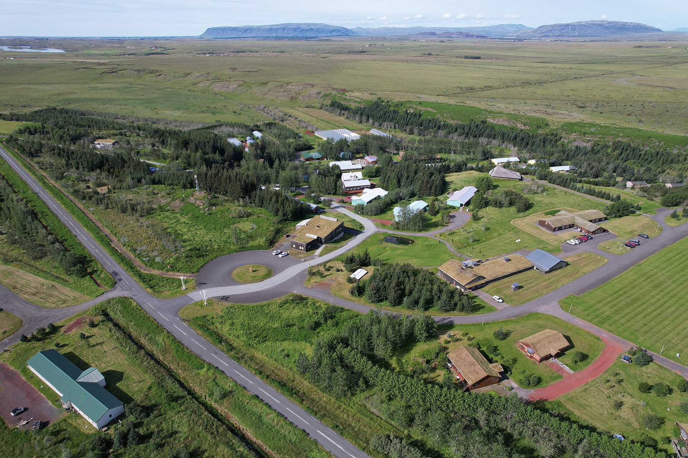
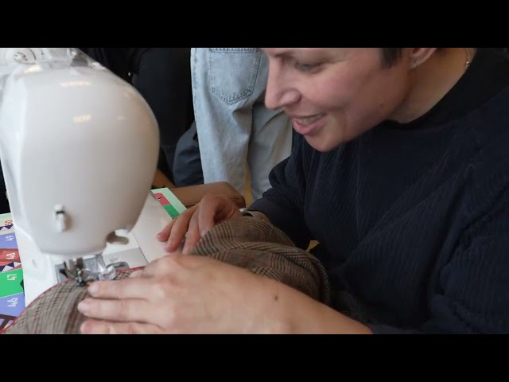
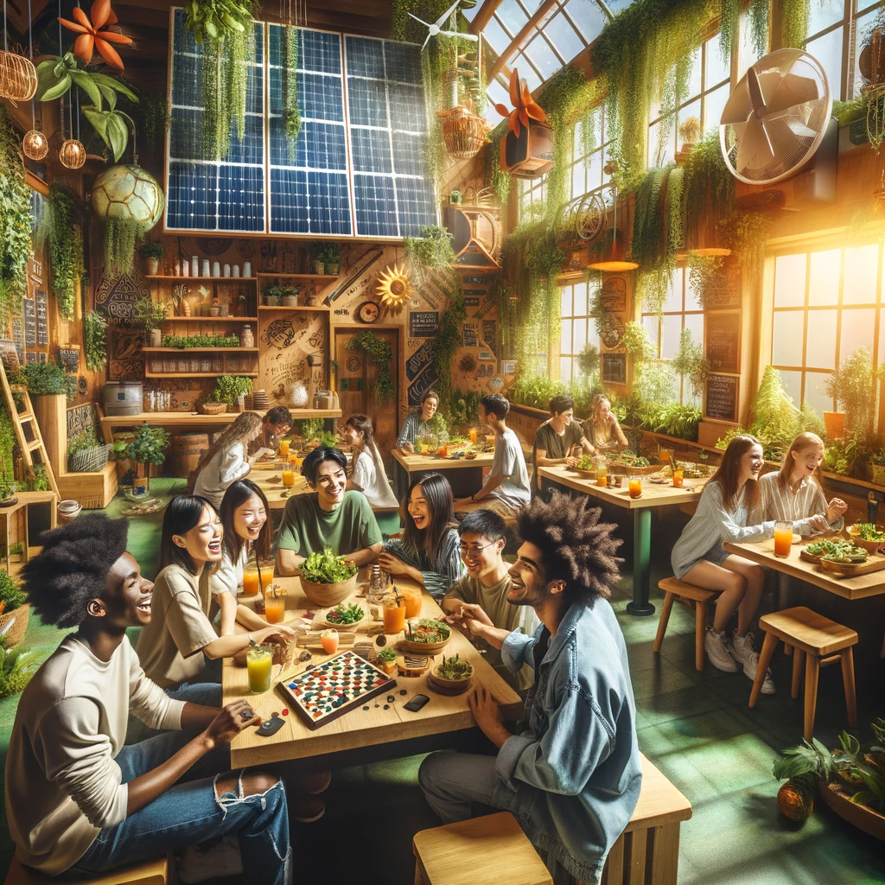

Eco Rangers — Journeys of Impact
A 19-month international project connecting sustainable travel, mental well-being and community — turning everyday journeys into journeys of impact.

Sólheimar · Steinninn / CC BY 4.0About the project
Eco Rangers — Journeys of Impact is Circa's flagship collaboration with Slovak Eco Quality (SEQ), a 19-month programme exploring how we travel, how we care for our own well-being, and how both are tied to the health of the planet.
Working with adult educators and community members, the project co-creates practical, reusable tools that help people move through the world with a lighter footprint and a deeper connection to place. Learning happens in both countries — from training weeks in Slovakia to hands-on activities at Iceland's Sólheimar Eco Village — and lands back home through local workshops and community events.
Highlights
- Training programmes in Slovakia and at Sólheimar Eco Village, Iceland
- Twenty local workshops and collaborative sustainable-city mapping
- A Sustainable Travel Guide, training methods and comic posters as open outputs
- Circa's Reykjavík clothes swap & repair café, bringing circular living to the community
Watch: the Reykjavík repair café
Gallery


Sustainable places around Akureyri
As part of Eco Rangers, we mapped sustainable spots around Akureyri — places to repair, reuse, eat and travel more lightly. Explore the map below.